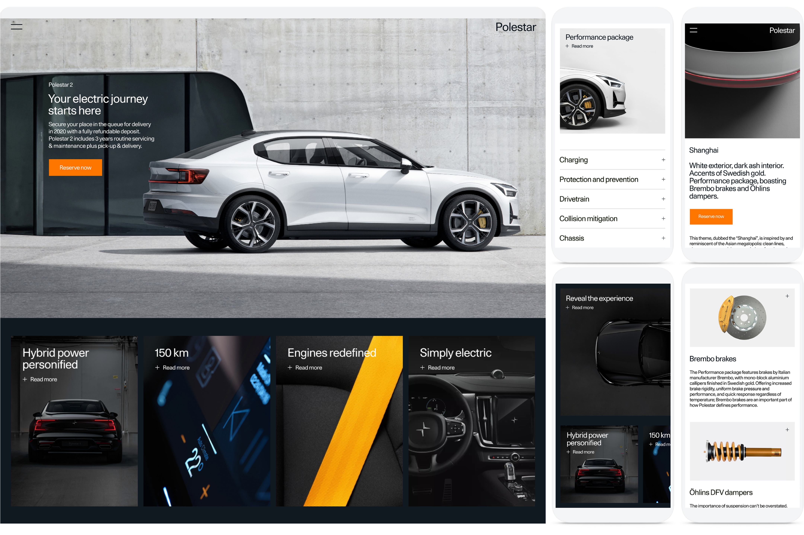

Welkom op mijn kleine website, waar ik alles deel wat je moet weten over het lettertype Unica77. Hier kom je meer te weten over de geschiedenis ervan, waar het vandaag de dag wordt gebruikt en de verschillende stijlen die je ermee kunt maken. Laten we samen op ontdekkingsreis gaan in de wereld van Unica77 en zien wat dit lettertype zo bijzonder maakt.
WHERE DID THE FONT COME FROM
Unica, ook wel bekend als Haas Unica, is een sans-serif lettertype uit de neogroteske categorie. Het werd in de late jaren 70 ontwikkeld door de Haas Type Foundry en oorspronkelijk uitgebracht in 1980. Dit lettertype werd gecreëerd als een ambitieus project dat beoogde de sterke punten van zowel Helvetica als Univers te combineren. Helaas werd Unica uitgebracht voor het tijdperk van desktop publishing, net toen de technologie van phototypesetting verouderd raakte. Bovendien werden latere bedrijfsfusies en auteursrechtelijke geschillen een struikelblok voor de beschikbaarheid van een digitale versie van Unica.
“In 2015 werden echter twee digitale heroplevingen van Unica uitgebracht. Eén versie werd officieel erkend en uitgegeven door de rechthebbenden van het lettertype, terwijl de andere werd gecreëerd met de goedkeuring van het oorspronkelijke ontwikkelingsteam.”
WHO MADE IT
In 1972 verwierf de Haas Type Foundry (niet meer actief in Zwitserland), Deberny & Peignot, een voormalige Franse concurrent. Deze overname gaf Haas de auteursrechten over het Univers-lettertype, terwijl ze al eigenaar waren van Helvetica, dat ook bekend stond als Neue Haas Grotesk. Hierdoor werden Helvetica en Univers onder hetzelfde bedrijf samengebracht. In de jaren 1970 nam Haas het initiatief om een bijgewerkte versie van Helvetica te ontwikkelen, specifiek voor elektronische fototypesetting op beeldschermen. Het project werd toevertrouwd aan Team '77, bestaande uit André Gürtler, Christian Mengelt en Erich Gschwind.
Het resultaat van hun inspanningen was een lettertype dat voornamelijk was gebaseerd op Helvetica en Univers, en daarom de naam "Unica" kreeg, als een samensmelting van "Univers" en "Helvetica". Toch werden ook kenmerken van andere lettertypen, zoals Akzidenz-Grotesk, geïntegreerd. Unica werd voor het eerst uitgebracht in 1980. Helaas verdween het lettertype al snel van de markt als gevolg van de opkomst van desktop publishing software en een eigendomsgeschil.
FIRST DIGITAL RELEASE
Tot 2008 was er een digitale implementatie van Scangraphic beschikbaar in de fontstore van Elsner+Flake. Helaas moest deze imitatie van de markt worden verwijderd vanwege een auteursrechtkwestie waarbij Linotype aanspraak maakte op de rechten van de inmiddels niet meer bestaande Haas Type Foundry. Aangezien het lettertype nu niet langer legaal beschikbaar is, zijn de originele en technische details ervan inmiddels wat vaag geworden. Er zijn echter aanwijzingen dat dit lettertype twee verschillende optische maten heeft, namelijk SB (Scangraphic Body, ontworpen voor tekst in de lopende tekst) en SH (Scangraphic Headline, ontworpen voor koppen en weergave). Het is vermeldenswaard dat Unica SH strakkere letterafstanden heeft in vergelijking met Unica SB.
CONTEMPORARY USE OF THE FONT
Doordat het lettertype door de jaren heen wat vaag is geworden, weet men niet hoe precies het originele in elkaar zit. Echter zijn er door de jaren heen wel modernere varianten op de markt gebracht. Enkele varianten zijn:
- Neue Haas Unica (2014-2015): Ontworpen door Toshi Omagari voor Monotype, is dit een herboren versie gebaseerd op de Unica fototypesetting bestanden van Team '77 gevonden in het Monotype archief in Duitsland.
- LL Unica77 (2015-2016): Dit is een herboren variant, dat is gebaseerd op de originele tekeningen uit de jaren 1970. Dit variant is ontworpen in samenwerking met Maurice Göldner en Christian Mengelt. Hij was lid van Team ’77 en keurde de uiteindelijke implementatie van Unica goed. De Zwitserse lettergieterij Lineto mocht hierdoor doorgaan. Lineto betaald een kleine licentievergoeding aan Team ’77.
Hierboven is een voorbeeld te zien van een hedendaagse toepassing en gebruik van Unica77. Het zwitserse automerk Polestar gebruikt Unica77 in zijn uitingen. Marketing director Nadine Romero zegt:
"The Polestar brand combines Nordic understatement with quality, technology, and minimalist design. We saw all these values perfectly represented in Unica77. Moreover, Polestar’s history is just as closely linked to the technological innovations of our time as that of Unica77."
DIFFERENCE BETWEEN FONTS
Abcdefghijklmnopqrstuvwxyz
De twee lettertypen hebben bijna dezelfde x-hoogte en zijn allebei gebaseerd op het originele Haas Unica. De karakterontwerpen van Neue Haas Unica (origineel lettertype) en Unica77 lijken erg op elkaar. Ze hebben echter een aantal subtiele verschillen: Unica77 heeft een iets grotere x-hoogte dan Neue Haas Unica; bij hetzelfde gewicht en puntgrootte heeft Unica77 standaard strakkere letterafstand en zijn de tekens zwaarder dan Neue Haas Unica. Deze verschillen vallen meer op bij lange tekst op klein formaat.